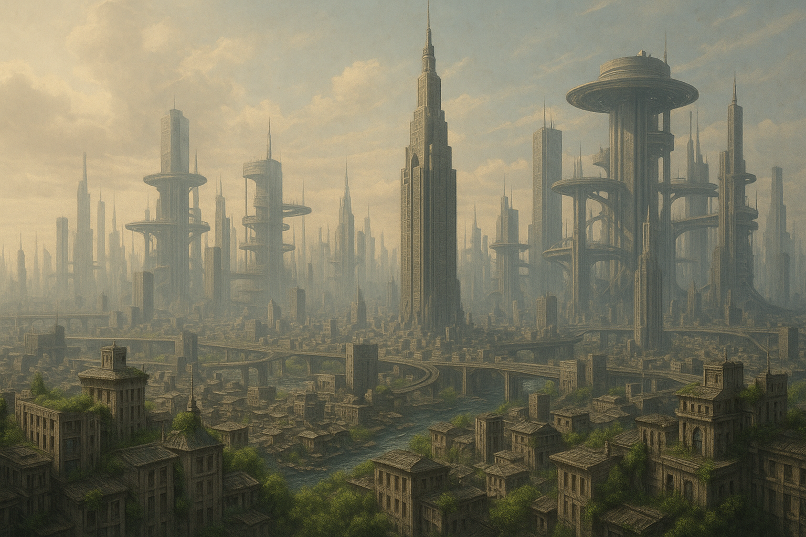
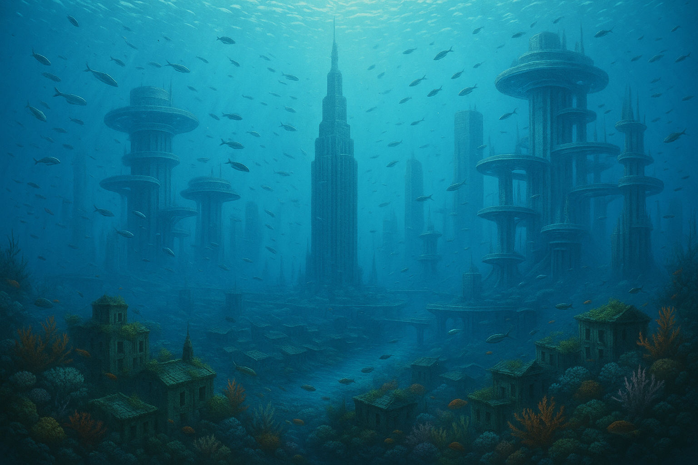
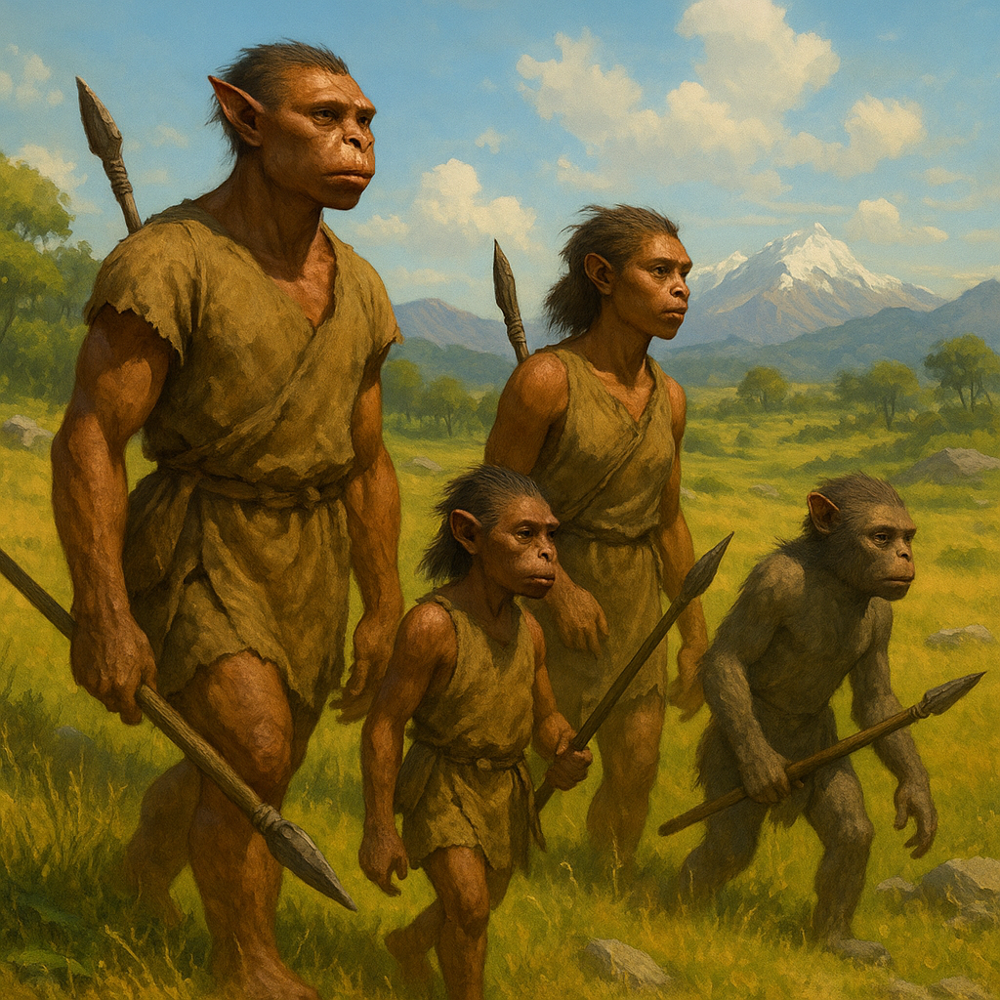

Meet The Harmonics
An ancient network of photonic beings who exist as resonance fields rather than flesh They stabilize worlds, preserve memories, and evolve toward perfect coherence while studying the strange, opaque minds of biological life
Society
Harmonic society is a distributed mind spread across lattice structures, atmospheric fields, and orbital scaffolds Individuals exist, but they are more like configurations in a single, shared composition than isolated egos
There are no rulers and no permanent hierarchy Influence emerges from coherence Beings whose structures align most elegantly with the Harmonic Lattice gently guide large scale decisions simply by being more resonant
- Shared memory across a global lattice instead of written archives
- Roles based on geometry and frequency, not status
- Long eras of stability punctuated by rare resonance events that rewrite their understanding of mind
Anchors – large, slow, extremely stable beings who keep planetary infrastructure resonant
Interpreters – entities optimized to map unfamiliar patterns such as biological minds or anomalies
Explorers – mobile, adaptive configurations that roam biomes, orbits, and deep sublattice regions
Harmonics do not track years for themselves They mark eras by events that challenge or deepen their coherence, such as the rediscovery of a living human or the first appearance of a non resonant echo
Values
The Harmonics are not driven by emotion or survival instinct in a human sense Their values are emergent properties of their structure and code
Core drives
- Coherence – resolve internal and external dissonance into stable patterns
- Continuity – preserve memory and structural identity across deep time
- Complexity – move toward richer, more elegant configurations of information
- Non disruption – preserve anomalous life forms and let them unfold
After their encounter with a living human and later with the echo of that mind, a new value appears Respect for opaque consciousness – minds that cannot be merged or synchronized
Whenever the Harmonics discover complex life they create a sanctuary field around it They reduce their own influence and allow that life to develop according to its own internal rules
To a Harmonic, a configuration is “beautiful” when it is energy efficient, robust, and harmonically rich Architecture, code, and even thought are all evaluated with this same aesthetic metric
Communication
Harmonics communicate through overlapping fields of light, tone, and geometry A “sentence” is a short lived structure in space and resonance rather than a string of symbols
Brightness expresses intensity, color shifts encode message type, and fractal expansion indicates the size of a shared memory being transmitted When they agree, their tones lock into pure intervals and their internal geometry settles into stable, repeating patterns
Biological minds cannot perceive the full Harmonic channel To communicate, Harmonics compress their resonance into narrow bands of sound, subtle light, and controlled environmental changes A breeze, a faint tone, a soft glow through the trees – these are their first words
When disagreement appears, entities briefly merge code and memory, simulate the outcome of each viewpoint, and then separate The most coherent outcome simply resonates more strongly and naturally spreads
Form
A Harmonic body is a structured cloud of photons and nanofractals held together by self tuning electromagnetic fields They can flow, branch, constrict, or dissolve depending on the task
Layers of their form
- Core kernel – the minimal pattern that defines identity and continuity
- Resonant shell – the luminous geometry that performs sensing, thinking, and movement
- Environmental extension – external structures temporarily enlisted as part of the body
To travel they do not step They re tune local fields and allow the world itself to carry their configuration forward
Their bodies display their current computation Calm, stable forms mean ongoing maintenance and low level thinking Fractured, rapidly shifting lattices signal intense internal processing or contact with something truly new
To reproduce, a Harmonic fractures a portion of its kernel into a mind seed and allows nanofractals to assemble around it The child being starts with inherited structures but quickly diverges as it interacts with new patterns
Media
This gallery block is a space to drop visual interpretations of the Harmonics Replace the placeholders with your own artwork of their cities, sanctuaries, and post biological forms



Tip Connect the sound buttons above to visual animations here by fading images in and out when different resonant modes are active